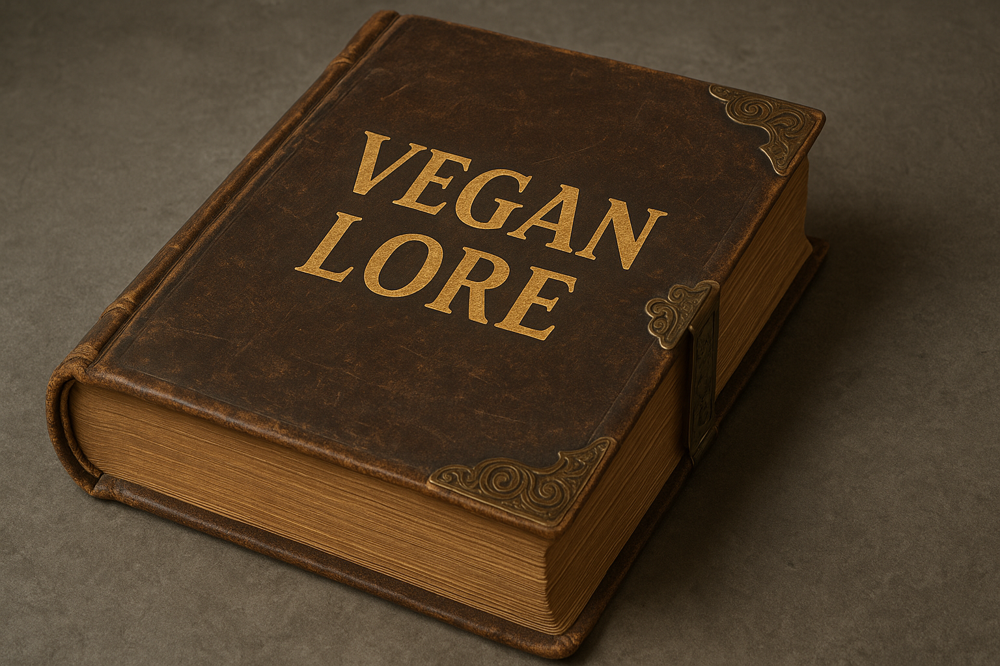

Glossary of Vegan Protein Types
- Pea Protein
- Comes from yellow split peas stripped of most starch and fiber. A 2022 ileal-tube study clocked its digestible indispensable amino acid score at 1.00, matching dairy casein and giving it enough lysine and leucine to rival whey for muscle growth.*
- Brown-Rice Protein
- Milled and enzymatically treated to lift protein to roughly eighty percent purity; the same DIAAS work placed rice below one hundred, meaning it needs a partner to plug lysine gaps.*
- Soy Protein Isolate
- A veteran of sports nutrition with a complete amino profile, landing in the ninety-to-ninety-five DIAAS band—strong yet still shy of the century mark and occasionally shunned over allergy or phytoestrogen worries.*
- Hemp Protein
- Pressed from defatted hempseed meal and delivers edestin, albumin, omega-3 precursors, and a naturally nutty flavor. Reviews report high in-vitro digestibility and arginine levels that outpace most legumes, though lysine remains the weak link around sixty-five.*
- Pumpkin-Seed Protein
- Rich in magnesium and tryptophan; supports savory flavor. Limited DIAAS data suggest mid-sixties, so used for mineral diversity rather than as a base.
- Sunflower-Seed Protein
- Neutral taste and emulsifying power improve mouthfeel; methionine solid but lysine scarce, so pairs with pea or fava.
- Fava-Bean Protein
- Gels well with balanced branched-chain profile; early trials show BCAT activation on par with pea, hinting at muscle potential though DIAAS pending.
- Chia-Seed Protein
- About sixty percent protein plus mucilaginous fiber; low leucine keeps it as texture support rather than main protein.
- Quinoa Protein
- Complete amino spectrum and saponins can taste bitter; batch tests reach mid-eighties DIAAS, so in premium blends.
- Algae and Yeast Proteins
- Yeast protein isolate scored 0.91 indispensable-to-dispensable ratio in 2024, positioning microbial sources as future heavy hitters.*
Together these contenders form the building blocks of vegan powders. Pea and soy lead quality; rice, hemp, and fava patch flavor; seeds add minerals; microbial proteins promise sustainable profiles.